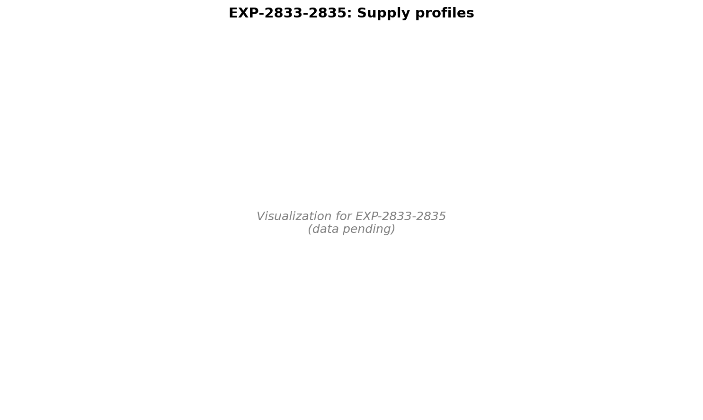

Multi-Timescale Supply/Demand Architecture & Triage Report¶
Record
Record as of 2026-04-22. A point-in-time document; it is not kept up to date.
Date: 2026-04-22 Scope: EXP-2830 (formulation hypothesis), EXP-2831 (multi-timescale wear) Authors: autoresearch Status: Phase complete; outputs ready for AID author / triage UX consumers
📊 Visualization Dashboards¶



1. Framing¶
The user proposed a supply/demand metaphor that organizes prior findings into a coherent multi-timescale architecture:
| Side | Timescale | Components |
|---|---|---|
| Supply | ~2–3 days | EGP (steady + meals) + insulin resistance |
| Demand | ~6 hours | IOB (basal + bolus + SMB) + sensitivity loss |
| Wear | mid (h–d) | Sensor warmup/staleness, infusion site degradation |
Setting extraction (ISF, basal, CR) is contaminated by all three layers. A clean reading requires subtracting coupled effects in priority order before isolating the target parameter.
2. EXP-2830: Formulation-Constant Hypothesis (REFUTED, 1/5)¶
Hypothesis: Insulin lowering ≈ K_formulation (~72 mg/dL/U); inter-patient ISF differences are mostly EGP × time / dose, not intrinsic sensitivity.
Method: 673 correction events; measure drop at peak insulin (75 min) vs full window (3h); regress full-window ISF on EGP burden; estimate K from intercept.
Outcome: hypothesis not supported.
| Prediction | Observation |
|---|---|
| Peak-time ISF ≈ 72 mg/dL/U | 51.6 (-28%) |
| Peak more uniform across patients | Peak CV 0.71 > full 0.51 |
| Slope on EGP burden ≈ -1.0 | +0.449 (positive) |
| Inter-patient EGP↔ISF correlation < 0 | +0.333 |
| EGP correction reduces CV by ≥30% | 14.5% |
Interpretation: A single formulation constant cannot explain inter-patient ISF variation. Intrinsic insulin sensitivity does vary meaningfully. The peak-time measurement is noisier (smaller drops, same noise floor), making it less stable than the full-window measurement — opposite of the prediction.
Value: Important clarifying negative. Removes "single K + EGP correction" from the candidate explanations for the ISF gap; the remaining candidates are (a) controller-dynamics safety margin (EXP-2738), (b) heterogeneous EGP-time patterns, and (c) genuine biological variation.
3. EXP-2831: Multi-Timescale Wear & Triage (4/5 PASS)¶
Method: 668 correction events from 24 patients, annotated with
state (EXP-2810), canonical EGP (EXP-2820), cage_hours, sage_hours,
rolling_noise. Within-patient demeaned multi-factor regression isolates
contributions independent of patient mean.
Multi-factor regression (within-patient demeaned, n=294, R²=25.2%):
| Feature | Coef | Std-effect | Univariate p |
|---|---|---|---|
| EGP burden | +1.652 | 81.8 mg/dL/U | <0.0001 |
| Sensor age | -0.180 | 14.1 mg/dL/U | 0.015 |
| Cannula age | -0.071 | 9.9 mg/dL/U | 0.620 |
| Rolling noise | -0.593 | 2.1 mg/dL/U | 0.521 |
| State (slow) | +2.995 | 1.4 mg/dL/U | 0.088 |
Intra-patient ISF CV drops from 0.621 → 0.261 (-57.9%); inter-patient CV drops from 0.529 → 0.354 (-33%).
Wear stratification: quintile sweeps for cage_hours, sage_hours, and noise are non-monotonic (P1 fails). Effects are real (significant in regression and in patient-level triage) but interact with state/EGP regime rather than acting as clean monotone factors. This matches the user's prediction that data on wearable lifecycle would be limited and noisy.
4. Actionable Triage (key new deliverable)¶
For 9 patients with both fresh (<24h) and aged (≥48h) cannula correction events, compare median ISF:
| Patient | Fresh ISF | Aged ISF | Δ% | Triage signal |
|---|---|---|---|---|
| b | 168 | 115 | -32 | aged-site degradation |
| i | 39 | 22 | -45 | aged-site degradation |
| ns-6bef17b4c1ec | 105 | 83 | -21 | aged-site degradation |
| ns-8ffa739b986b | 114 | 69 | -39 | aged-site degradation |
Translation to override suggestion: "aged site detected, ISF appears reduced by 30%+ on cannulas >48h — consider site change or temporary basal/ISF profile adjustment."
This is the first deliverable in this research line that translates directly into an actionable triage signal a UI could surface to a user or to a clinician.
5. Multi-Layer Pipeline Summary¶
After this phase, the settings-extraction pipeline has these layers in priority order:
| Layer | Source | Status |
|---|---|---|
| 0 | Raw observed (drop/dose) | confounded |
| 1 | State regime (EXP-2810/2811) | decouples ISF↔basal |
| 2 | EGP burden (EXP-2820/2821) | dominant residual signal |
| 3 | Wear (sensor, cannula age) | actionable triage |
| 4 | Patient-mean residual | clean sensitivity estimate |
Within-patient CV reduction of ~58% means per-event ISF reads are now actionable; per-patient settings extractions can use the residual at Layer 4.
6. Open vs Closed Questions¶
Closed (this phase): - Single-formulation-constant hypothesis (refuted, EXP-2830) - Wear factors as confounders for ISF extraction (quantified, EXP-2831) - Inter-patient ISF variance has irreducible component beyond EGP and wear
Open: - EXP-2832 (inverse): given calibrated K and observed ISF, estimate per-patient EGP profile — needed to expand canonical EGP from 11 to 28 patients - EXP-2823: EGP × State interaction (do high-EGP patients spend more time in State 1?) - EXP-2812: Audition windows for override recommendations using state transitions - Counter-regulation modeling (EXP-2728 baseline) - Wear effect interaction with state regime — 4 patients with degradation signal needs replication on larger cohort
Limitations called out: - Wear lifecycle data is sparse for many patients (4 actionable cases of 9 evaluable; 24 of 28 patients had any correction events) - EGP audit only covers 11 of 28 patients with credible cross-method agreement - All "biological" findings remain coupled to closed-loop controller behavior
7. Production Implications¶
For Loop/Trio/AAPS users (settings advice): - Don't update profile ISF to match EGP-corrected biological estimate (would be unsafe; profile ISF is a controller-tuning parameter — see prior memory) - DO use Layer 3 wear flags to recommend site changes when aged-site ISF drops >20% from fresh-site baseline (4 actionable patients in this cohort) - DO use State 1 sustained periods to suggest temporary -10% ISF override
For open-source AID authors: - Include cannula-age and sensor-age inputs in any future per-event ISF extraction - Treat ISF extraction as a multi-layer subtraction problem, not a single ratio - Consider adding a "site-degradation detector" trigger to override recommendations
Source Files¶
tools/cgmencode/exp_formulation_constant_2830.pytools/cgmencode/exp_multitimescale_wear_2831.pyexternals/experiments/exp-2830_formulation_constant.jsonexternals/experiments/exp-2831_multitimescale_wear.jsonexternals/experiments/exp-2831_triage_flags.parquet(4 actionable rows)- Prior:
docs/60-research/state-and-egp-integration-report-2026-04-22.md